Remoção antes do primeiro commit
Temos no nosso diretório que está sendo monitorado pelo Git os seguintes arquivos:
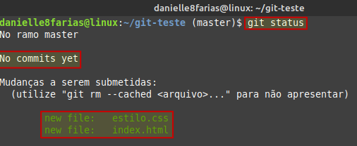No fluxo do git, temos:
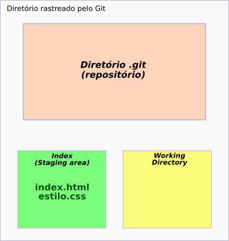Como podemos ver, ainda não temos commits.
Vamos criar e adicionar ao index um terceiro arquivo:
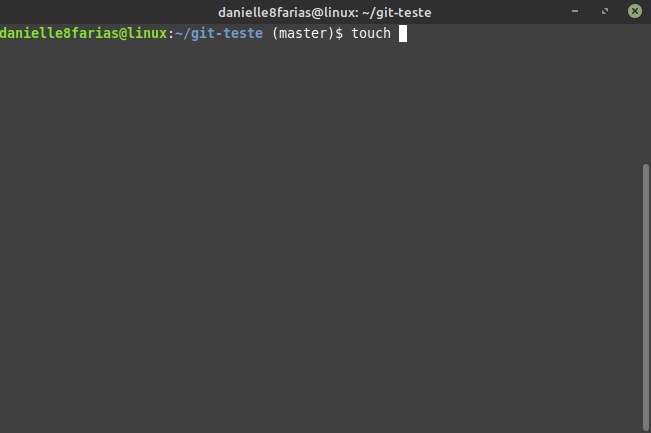Observando o fluxo do Git:
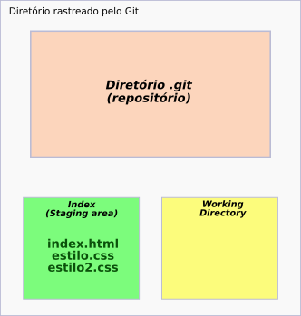Vamos supor que adicionamos esse arquivo estilo2.css sem querer. Não era o que queríamos. Então devemos tirá-lo do index. Observe que o próprio terminal nos dá uma dica de como fazê-lo:

Esse é exatamente o comando que vamos utilizar aqui.
$ git rm --cached estilo2.css
- $ indica que você deve usar o usuário comum para fazer essa operação.
Utilizando o comando git status, temos:
No fluxo do Git, temos:
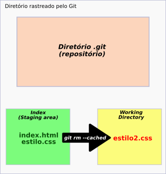Para retirar todos os arquivos, podemos usar o comando
$ git rm --cached -r *
- -r de recursivo, ou seja, inclui subdiretórios, se houver.
- *, asterisco; todos os arquivos.
Remoção após o primeiro commit
Caso não seja o primeiro commit e você precise excluir um arquivo do index, utilize o comando:
$ git reset HEAD <arquivo>
- reset; redefinir.
- HEAD é um ponteiro que normalmente aponta para o último commit.
- Escreva o nome do(s) arquivo(s) sem os sinais de < e >.
O que esse comando faz é uma cópia do head para o index; retirando o arquivo que estava no index antes.
No nosso exemplo,
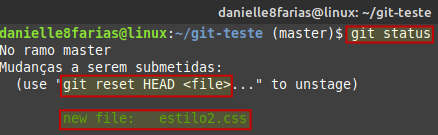 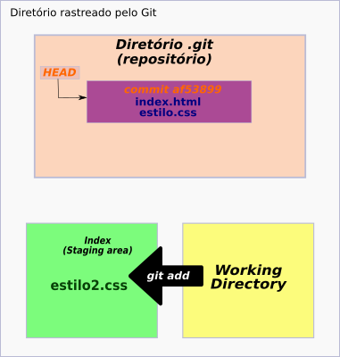Usando o comando
$ git reset HEAD estilo2.css
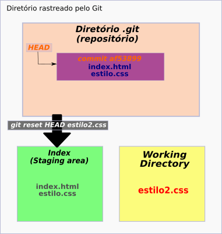
Para retirar do index todos os arquivos, digite:
$ git reset HEAD .
- ponto é o diretório atual. Isso quer dizer que ele vai incluir todos os arquivos e subdiretórios que estão no index.
Exemplo:
Adicionando dois arquivos ao index.
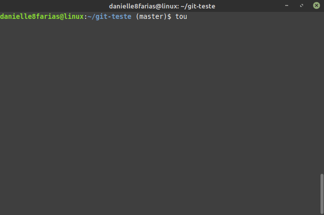Mostrando os três arquivos que estão agora no index.
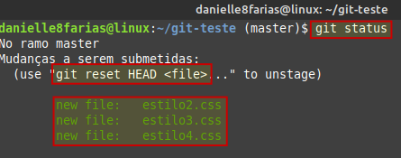Retirando todos os arquivos que estão no index.
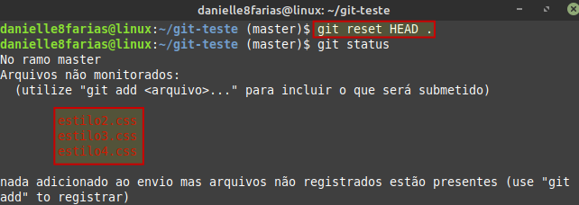